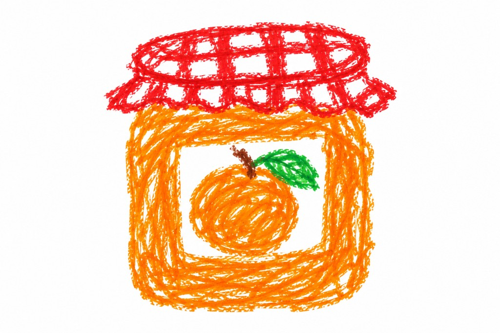

Marmellata di arance
Ingredienti
- 1 kg di arance
- 500 g di zucchero
- 1 limone
Preparazione
- Lava le arance, sbucciale e rimuovi i semi e la parte bianca in eccesso.
- Taglia la polpa a piccoli pezzi e mettila in una pentola con lo zucchero e il succo di limone.
- Cuoci a fuoco medio, mescolando regolarmente, fino a ottenere una consistenza densa.
- Versa la marmellata ancora calda nei vasetti puliti e lasciala raffreddare.